做Android开发五年，开发工具从最初的eclipse+ADT插件到AndroidStduio。Google更是在新版的AndroidStudio中集成了Android应用性能分析利器——**Profile**。
本文基于AndroidStudio 3.2.1 正式版进行分析并定位问题原因。附上下载地址：
1 概览
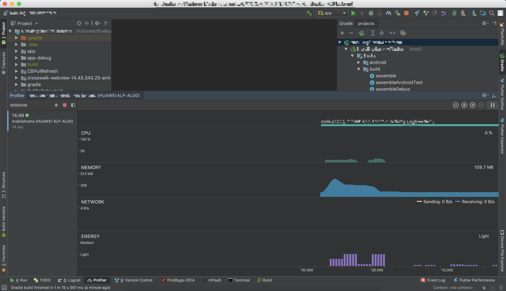在AndroidStudio中run项目，即可在底部选项卡中找到Profile，打开后会默认显示当前run的应用的信息。可以点击Profile页面右上加号选择连接的设备以及其他可以调试的应用进程。
图中可以看出，Profile可以监控选择的应用的 CPU、内存、网络、电量使用情况并通过波形图、柱形图、折线图实时的展示出来。
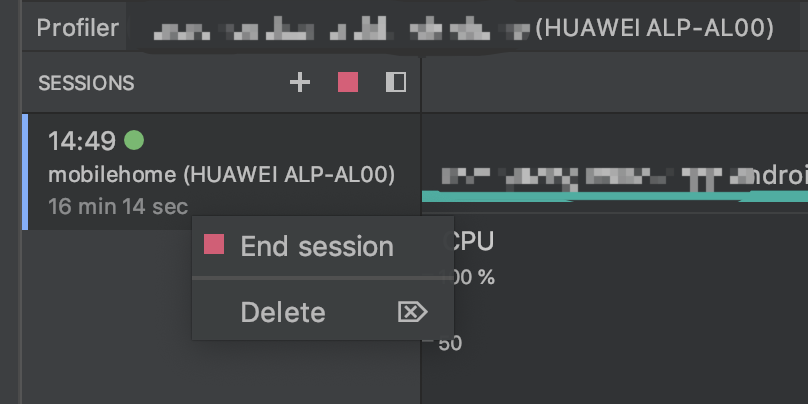点击左上角的红色方形或者在监控的会话中右键弹出选项框结束当前应用的监控或删除监控会话。
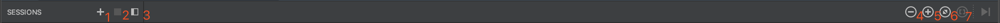顶部工具栏依次是：
- 添加需要监控的进程。
- 结束当前监控会话。
- 显示/隐藏侧边栏。
- 缩小监控视图。
- 放大监控视图。
- 重置监控视图。
- 显示采集区间。
2 CPU分析
在概览图中，点击CPU模块，进入CPU使用分析页面。
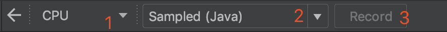图中三个菜单依次是：
- 可切换至内存、网络、电量监控。
- 切换不同监控目标。分别是
Sampled Java、Instrumented Java、Sampled Java、System Trace。 - Record 按键，点击开始采集CPU使用信息。
点击Record按钮开始采集CPU使用数据，点击Stop按钮停止采集数据。采集完成之后的样子如图，
图中深色部分表示采集区间，可以放大监控视图，然后缩小记录区间，选择一个线程，可以详细看见线程中执行的方法。
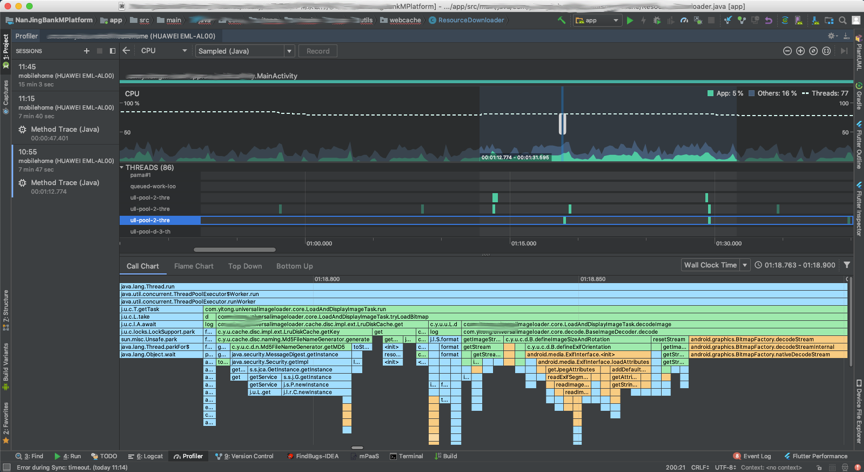Profile支持四种方式显示执行的方法。
- Call Chart:通过执行的顺序显示，见上图。
- Flame Chart:通过火焰图显示。
- Top Down:自顶向下调用显示。
- Bottom Up:自底向上调用显示。
通过分析CPU使用的视图，可以大致定位下面的问题。
- 采集五六分钟的CPU使用信息，缩放视图至最小，全局观察CPU在监控过程中的使用情况。
- Profile会同步记录用户的触摸事件及页面跳转等事件。对比CPU的瞬时使用情况找出问题代码。
- 选择记录一段时间片，重点分析这段时间片中各线程中的方法执行情况。
上图展示了ImageLoader加载图片所使用的CPU资源。能够得出的结论是，ImageLoader相关的代码被反复执行，本身就是一件异常的情况。
宏观分析观察CPU使用情况的波形图，发现存在周期性的CPU使用峰值。
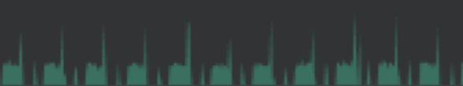再附上优化后的CPU使用情况波形图，已消除CPU使用峰值。
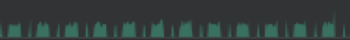出现峰值的原因，单凭监控线程的方法调用不容易定位问题，除非在特别熟悉代码的情况下。通常还需要结合内存使用和网络使用情况综合分析，进而定位问题。
3 内存分析
切换至内存分析页面。
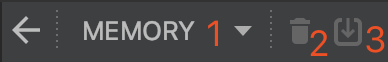图中三个菜单依次是：
- 可切换至CPU、网络、电量监控。
- 手动执行GC，释放内存。
- dump内存使用数据，可保存至文本数据。
内存使用，同样可以从宏观和微观的角度分析。Profile将不同类型的数据占用的内存用不同颜色表示。有：Java、Native、Graphics、Stack、Code、Others。
如图，内存持续增长，直至系统释放内存资源，因此宏观内存波形图呈锯齿状。而且可以看出主要是Native空间占用的内存持续增加。
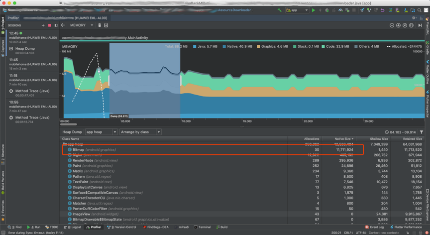从微观上看，放大显示区间，点击dump按键开始记录，选择分析区间，查看内存中，各类型数据所占用的空间。
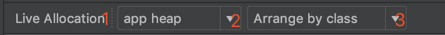- 区分两种内存分配。
Live Allocation和Heap Dump。 - 支持查看四种heap的内存分配。
image heap、zygote heap、app heap、JNI heap。 - 支持三种类的实例查看排序：
Arrange by class、Arrange by package、Arrange by callstack。
图中是优化后的内存监控图，内存占用已经趋于平稳。
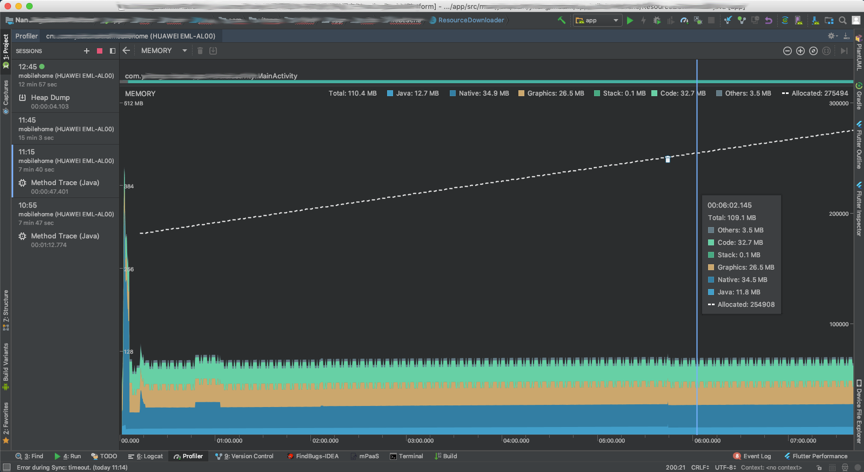4 网络分析
网络分析工具比较简单，图中折线图一个峰值表示一次网络连接。
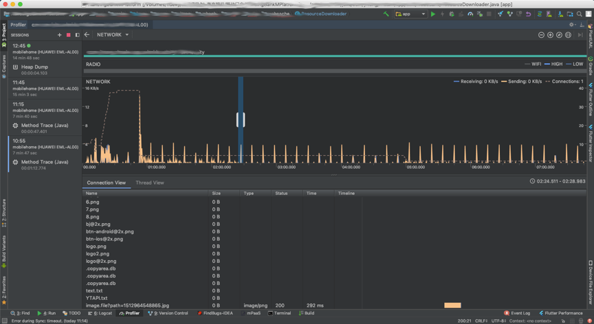通过选中一次网络连接可以查看到连接请求地址以及发送和接收的数据。
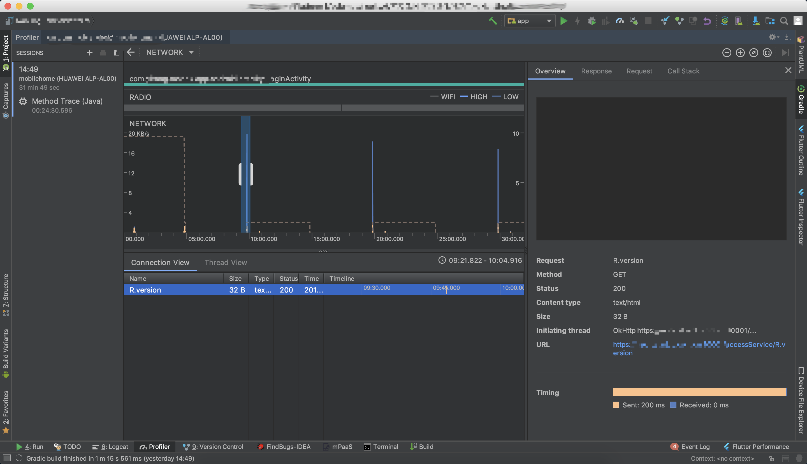最后附上优化后的网络监控。
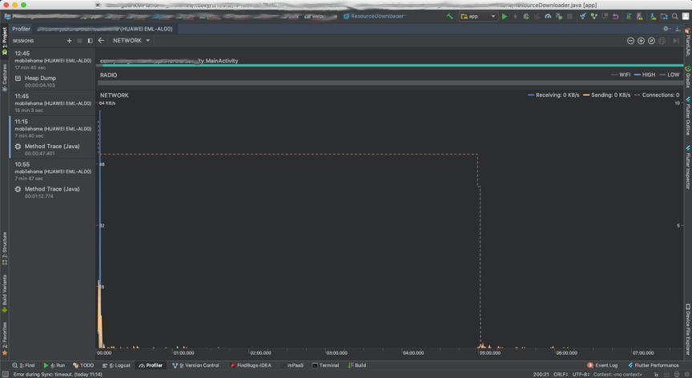5 耗电监控
耗电监控，通常检测不到任何问题，一般只是用来衡量应用的耗电情况。遇到耗电异常的应用，在CPU、内存、网络监控中都能发现问题。如：网络连接过程发送和接收数据需要使用网卡模块、推送功能需要保持的长连接、GC内存、定位功能都需要电量支持。附上图中优化前后的对比，注意看Light基线中电量使用的柱形图。应用耗电问题得到明显改善。
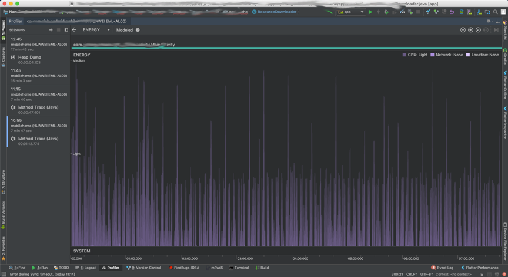 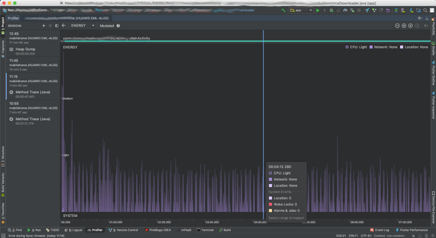6 总结
上面只是大概介绍了内存分析工具四个模块的简单使用。可能读者对优化前后的对比处于懵懂的状态。下面解读下，笔者待测试应用中存在的问题。
应用详情：
- 测试应用中使用了图片轮播模块，每2~3s显示一张图片。
- 使用ImageLoader加载图片。
正常情况下，ImageLoader支持三级缓存，根据LRU算法，轮播图片应该会保存在内存中，并且复用。不会出发网络连接以及内存的持续增长。
问题详情：
- 轮播图一共两张图片，其中一张图片资源是空。因此ImageLoader每次都会尝试发起网络连接下载此图片。
- ImageLoader初始化时，使用了禁止内存缓存的配置以及全局内存缓存空间只有2M。而后管配置的图片加载在内存中需要3M的空间，致使内存缓存失效。
综上，被测试应用总会发起网络请求以及内存资源占用持续增长导致出发系统GC。间接的导致了应用耗电。有兴趣的童鞋可以验证下，耗电峰值、网络连接、内存GC和CPU使用峰值之间的关联。他们四者之间的关系很微妙哟。
考虑到篇幅，暂时介绍至这里。后续可能会针对四个模块精讲。敬请期待。
觉得有用？那打赏一个呗。[去打赏](/donate/)